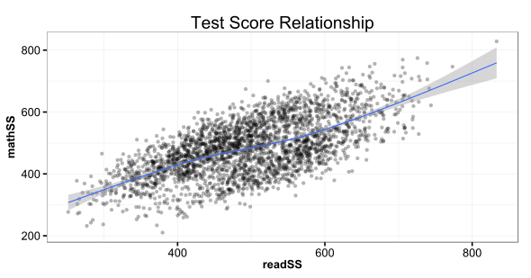

Overview
- What is R?
- What is RStudio?
- How does it work?
- What makes the language different?
- Why learn it?

Jared Knowles
Research Analyst, Wisconsin DPI
The R workspace in RStudio

[W]e wanted users to be able to begin in an interactive environment, where they did not consciously think of themselves as programming. Then as their needs became clearer and their sophistication increased, they should be able to slide gradually into programming, when the language and system aspects would become more important.
R has recently passed Stata on Google Scholar hits and it is catching up to the two major players SPSS and SAS

R is linked to from more and more sites

These links come from the explosion of add-on packages to R

Usage of the R listserv for help has really exploded recently

Data from Bob Muenchen available online
update.packages() command?summary??regressionfoo <- c(1, "b", 5, 7, 0)
bar <- c(1, 2, 3, 4, 5)
foo + bar
## Error: non-numeric argument to binary operator
data(mtcars)
mtcars
mpg cyl disp hp drat wt qsec vs am gear carb
Mazda RX4 21.0 6 160.0 110 3.90 2.620 16.46 0 1 4 4 Mazda RX4 Wag 21.0 6 160.0 110 3.90 2.875 17.02 0 1 4 4 Datsun 710 22.8 4 108.0 93 3.85 2.320 18.61 1 1 4 1 Hornet 4 Drive 21.4 6 258.0 110 3.08 3.215 19.44 1 0 3 1 Hornet Sportabout 18.7 8 360.0 175 3.15 3.440 17.02 0 0 3 2 Valiant 18.1 6 225.0 105 2.76 3.460 20.22 1 0 3 1 Duster 360 14.3 8 360.0 245 3.21 3.570 15.84 0 0 3 4 Merc 240D 24.4 4 146.7 62 3.69 3.190 20.00 1 0 4 2
2 + 2 ## add numbers
## [1] 4
2 * pi #multiply by a constant
## [1] 6.283
7 + runif(1, min = 0, max = 1) #add a random variable
## [1] 7.36
4^4 # powers
## [1] 256
sqrt(4^4) # functions
## [1] 16
+ - = / * and exponential ^, there is also integer division %/% and remainder in integer division (known as modulo arithmetic) %%2 + 2
## [1] 4
2/2
## [1] 1
2 * 2
## [1] 4
2^2
## [1] 4
2 == 2
## [1] TRUE
23%/%2
## [1] 11
23%%2
## [1] 1
<- is the assignment operator, it declares something is something elsefoo <- 3
foo
## [1] 3
: is the sequence operator1:10
## [1] 1 2 3 4 5 6 7 8 9 10
# it increments by one
a <- 100:120
a
## [1] 100 101 102 103 104 105 106 107 108 109 110 111 112 113 114 115 116
## [18] 117 118 119 120
# Something I want to keep from R
# Like my secret from the R engine
# Maybe intended for a human and not the computer
# Like: Look at this cool plot!
myplot(readSS,mathSS,data=df)
Easiest of all, R can generate distributions of data very easily
rnorm(100) or rbinom(100)This comes in handy when writing examples and building analyses because it is trivial to generate a synthetic piece of data to use as an example
Go ahead, try typing hist(rnorm(10000)) into RStudio
x <- 5 #store a variable with <-
x #print the variable
## [1] 5
z <- 3
ls() #list all variables
## [1] "a" "bar" "foo" "inputFile" "knit_deck"
## [6] "mtcars" "outputFile" "postFile" "x" "z"
ls.str() #list and describe variables
## a : int [1:21] 100 101 102 103 104 105 106 107 108 109 ...
## bar : num [1:5] 1 2 3 4 5
## foo : num 3
## inputFile : chr "Tutorial1_Intro.Rmd"
## knit_deck : logi TRUE
## mtcars : 'data.frame': 32 obs. of 11 variables:
## $ mpg : num 21 21 22.8 21.4 18.7 18.1 14.3 24.4 22.8 19.2 ...
## $ cyl : num 6 6 4 6 8 6 8 4 4 6 ...
## $ disp: num 160 160 108 258 360 ...
## $ hp : num 110 110 93 110 175 105 245 62 95 123 ...
## $ drat: num 3.9 3.9 3.85 3.08 3.15 2.76 3.21 3.69 3.92 3.92 ...
## $ wt : num 2.62 2.88 2.32 3.21 3.44 ...
## $ qsec: num 16.5 17 18.6 19.4 17 ...
## $ vs : num 0 0 1 1 0 1 0 1 1 1 ...
## $ am : num 1 1 1 0 0 0 0 0 0 0 ...
## $ gear: num 4 4 4 3 3 3 3 4 4 4 ...
## $ carb: num 4 4 1 1 2 1 4 2 2 4 ...
## outputFile : chr "Tutorial1_Intro.md"
## postFile : chr "Tutorial1_Intro.Rmd"
## x : num 5
## z : num 3
rm(x) # delete a variable
ls()
## [1] "a" "bar" "foo" "inputFile" "knit_deck"
## [6] "mtcars" "outputFile" "postFile" "z"
a <- 3
A <- 4
print(c(a, A))
## [1] 3 4
c is our friendA <- c(3, 4)
print(A)
## [1] 3 4
c stands for concatenate and allows vectors to have multiple elementsc, which is one of the most used functions you will ever usec is important to put any vector together, but remember that objects within a vector must all be of the same typea <- runif(100) # Generate 100 random numbers
b <- runif(100) # 100 more
c <- NULL # Setup for loop (declare variables)
for (i in 1:100) {
# Loop just like in Java or C
c[i] <- a[i] * b[i]
}
d <- a * b
identical(c, d) # Test equality
## [1] TRUE
camelCase; others are.dot.separated; others use_underscoresbase, grid, lattice, and ggplot2)summary function to a variety of object types and seeing how it adaptssummary(df[, 28:31]) #summary look at df object
## schoollow readSS mathSS proflvl
## Min. :0.000 Min. :252 Min. :210 advanced : 788
## 1st Qu.:0.000 1st Qu.:430 1st Qu.:418 basic : 523
## Median :0.000 Median :495 Median :480 below basic: 210
## Mean :0.242 Mean :496 Mean :483 proficient :1179
## 3rd Qu.:0.000 3rd Qu.:562 3rd Qu.:543
## Max. :1.000 Max. :833 Max. :828
summary(df$readSS) #summary of a single column
## Min. 1st Qu. Median Mean 3rd Qu. Max.
## 252 430 495 496 562 833
-The $ says to look for object readSS in object df
library(ggplot2) # Load graphics Package
library(eeptools)
qplot(readSS,mathSS,data=df,geom='point',alpha=I(0.3))+theme_dpi()+
opts(title='Test Score Relationship')+
geom_smooth()

length(unique(df$school))
## [1] 173
length(unique(df$stuid))
## [1] 1200
uniqstu <- length(unique(df$stuid))
uniqstu
## [1] 1200
<, >, <=, >=, ==, and != are used to compare values across vectorsbig <- c(9, 12, 15, 25)
small <- c(9, 3, 4, 2)
# Give us a nice vector of logical values
big > small
## [1] FALSE TRUE TRUE TRUE
big = small
# Oops--don't do this, reassigns big to small
print(big)
## [1] 9 3 4 2
print(small)
## [1] 9 3 4 2
= or == to assign anything, always use <-[] to avoid confusionbig <- c(9, 12, 15, 25)
big[big == small]
## [1] 9
# Returns values where the logical vector is true
big[big > small]
## [1] 12 15 25
big[big < small] # Returns an empty set
## numeric(0)
%in% operator determines whether each value in the left operand can be matched with one of the values in the right operand.big <- c(9, 12, 15, 25)
small <- c(9, 12, 15, 25, 9, 1, 3)
big[small %in% big]
## [1] 9 12 15 25 NA
big, but small also has objects that do not appear in big and so an NA is returnedbig[big %in% small]
## [1] 9 12 15 25
NA| (or) and & (and) can be used to combine two logical values and produce another logical value as the result. The operator ! (not) negates a logical value. These operators allow complex conditions to be constructed.foo <- c("a", NA, 4, 9, 8.7)
!is.na(foo) # Returns TRUE for non-NA
## [1] TRUE FALSE TRUE TRUE TRUE
class(foo)
## [1] "character"
a <- foo[!is.na(foo)]
a
## [1] "a" "4" "9" "8.7"
class(a)
## [1] "character"
|| and && are similar, but they combine two logical vectors. The comparison is performed element by element, so the result is also a logical vector.zap <- c(1, 4, 8, 2, 9, 11)
zap[zap > 2 | zap < 8]
## [1] 1 4 8 2 9 11
zap[zap > 2 & zap < 8]
## [1] 4
is.numeric(A)
## [1] TRUE
class(A)
## [1] "numeric"
print(A)
## [1] 3 4
b <- c("one", "two", "three")
print(b)
## [1] "one" "two" "three"
is.numeric(b)
## [1] FALSE
c <- c(TRUE, TRUE, TRUE, FALSE, FALSE, TRUE)
is.numeric(c)
## [1] FALSE
is.character(c)
## [1] FALSE
is.logical(c) ## Results in a logical value
## [1] TRUE
class functionclass(A)
## [1] "numeric"
class(b)
## [1] "character"
class(c)
## [1] "logical"
myfac <- factor(c("basic", "proficient", "advanced", "minimal"))
class(myfac)
## [1] "factor"
myfac # What order are the factors in?
## [1] basic proficient advanced minimal
## Levels: advanced basic minimal proficient
myfac_o <- ordered(myfac, levels = c("minimal", "basic", "proficient", "advanced"))
myfac_o
## [1] basic proficient advanced minimal
## Levels: minimal < basic < proficient < advanced
summary(myfac_o)
## minimal basic proficient advanced
## 1 1 1 1
class(myfac_o)
## [1] "ordered" "factor"
unclass(myfac_o)
## [1] 2 3 4 1
## attr(,"levels")
## [1] "minimal" "basic" "proficient" "advanced"
defac <- unclass(myfac_o)
defac
## [1] 2 3 4 1
## attr(,"levels")
## [1] "minimal" "basic" "proficient" "advanced"
minimal be 2 and basic be 3?# From the eeptools package
defac <- function(x) {
x <- as.character(x)
x
}
defac(myfac_o)
## [1] "basic" "proficient" "advanced" "minimal"
defac <- defac(myfac_o)
defac
## [1] "basic" "proficient" "advanced" "minimal"
myfac_o
## [1] basic proficient advanced minimal
## Levels: minimal < basic < proficient < advanced
as.numeric(myfac_o)
## [1] 2 3 4 1
myfac
## [1] basic proficient advanced minimal
## Levels: advanced basic minimal proficient
as.numeric(myfac)
## [1] 2 4 1 3
lubridate package for more advanced functionality including mathematical operations on datesmydate <- as.Date("7/20/2012", format = "%m/%d/%Y")
# Input is a character string and a parser
class(mydate) # this is date
## [1] "Date"
weekdays(mydate) # what day of the week is it?
## [1] "Friday"
mydate + 30 # Operate on dates
## [1] "2012-08-19"
# We can parse other formats of dates
mydate2 <- as.Date("8-5-1988", format = "%d-%m-%Y")
mydate2
## [1] "1988-05-08"
mydate - mydate2
## Time difference of 8839 days
# Can add and subtract two date objects
as.numeric(mydate) # days since 1-1-1970
## [1] 15541
as.Date(56, origin = "2013-4-29") # we can set our own origin
## [1] "2013-06-24"
b <- rnorm(5000)
c <- runif(5000)
a <- b + c
mymod <- lm(a ~ b)
class(mymod)
## [1] "lm"
print(1)
## [1] 1
# The 1 in braces means this element is a vector of length 1
print("This tutorial is awesome")
## [1] "This tutorial is awesome"
# This is a vector of length 1 consisting of a single 'string of
# characters'
print(LETTERS)
## [1] "A" "B" "C" "D" "E" "F" "G" "H" "I" "J" "K" "L" "M" "N" "O" "P" "Q"
## [18] "R" "S" "T" "U" "V" "W" "X" "Y" "Z"
# This vector has 26 character elements
print(LETTERS[6])
## [1] "F"
# The sixth element of this vector has length 1
length(LETTERS[6])
## [1] 1
# The length of that element is a number with length 1
mymat <- matrix(1:36, nrow = 6, ncol = 6)
rownames(mymat) <- LETTERS[1:6]
colnames(mymat) <- LETTERS[7:12]
class(mymat)
## [1] "matrix"
rownames(mymat)
## [1] "A" "B" "C" "D" "E" "F"
colnames(mymat)
## [1] "G" "H" "I" "J" "K" "L"
mymat
## G H I J K L
## A 1 7 13 19 25 31
## B 2 8 14 20 26 32
## C 3 9 15 21 27 33
## D 4 10 16 22 28 34
## E 5 11 17 23 29 35
## F 6 12 18 24 30 36
dim(mymat) # We have 6 rows and 6 columns
## [1] 6 6
myvec <- c(5, 3, 5, 6, 1, 2)
length(myvec) # What happens when you do dim(myvec)?
## [1] 6
newmat <- cbind(mymat, myvec)
newmat
## G H I J K L myvec
## A 1 7 13 19 25 31 5
## B 2 8 14 20 26 32 3
## C 3 9 15 21 27 33 5
## D 4 10 16 22 28 34 6
## E 5 11 17 23 29 35 1
## F 6 12 18 24 30 36 2
foo.mat <- matrix(c(rnorm(100), runif(100), runif(100), rpois(100, 2)), ncol = 4)
head(foo.mat)
## [,1] [,2] [,3] [,4]
## [1,] -0.3241 0.48491 0.2602 0
## [2,] -1.1559 0.75664 0.4601 1
## [3,] -0.2953 0.92683 0.1232 4
## [4,] -0.8947 0.20960 0.5379 0
## [5,] -0.5044 0.05443 0.1044 0
## [6,] 0.9275 0.13454 0.2465 2
cor(foo.mat)
## [,1] [,2] [,3] [,4]
## [1,] 1.000000 -0.007477 -0.060216 -0.036005
## [2,] -0.007477 1.000000 0.007085 -0.147948
## [3,] -0.060216 0.007085 1.000000 0.006529
## [4,] -0.036005 -0.147948 0.006529 1.000000
mycorr <- cor(foo.mat)
class(mycorr)
## [1] "matrix"
mycorr2 <- as.data.frame(mycorr)
class(mycorr2)
## [1] "data.frame"
mycorr2
## V1 V2 V3 V4
## 1 1.000000 -0.007477 -0.060216 -0.036005
## 2 -0.007477 1.000000 0.007085 -0.147948
## 3 -0.060216 0.007085 1.000000 0.006529
## 4 -0.036005 -0.147948 0.006529 1.000000
dim and classmyarray <- array(1:42, dim = c(7, 3, 2), dimnames = list(c("tiny", "small",
"medium", "medium-ish", "large", "big", "huge"), c("slow", "moderate", "fast"),
c("boring", "fun")))
class(myarray)
## [1] "array"
dim(myarray)
## [1] 7 3 2
dimnames(myarray)
## [[1]]
## [1] "tiny" "small" "medium" "medium-ish" "large"
## [6] "big" "huge"
##
## [[2]]
## [1] "slow" "moderate" "fast"
##
## [[3]]
## [1] "boring" "fun"
myarray
## , , boring
##
## slow moderate fast
## tiny 1 8 15
## small 2 9 16
## medium 3 10 17
## medium-ish 4 11 18
## large 5 12 19
## big 6 13 20
## huge 7 14 21
##
## , , fun
##
## slow moderate fast
## tiny 22 29 36
## small 23 30 37
## medium 24 31 38
## medium-ish 25 32 39
## large 26 33 40
## big 27 34 41
## huge 28 35 42
mylist <- list(vec = myvec, mat = mymat, arr = myarray, date = mydate)
class(mylist)
## [1] "list"
length(mylist)
## [1] 4
names(mylist)
## [1] "vec" "mat" "arr" "date"
str(mylist)
## List of 4
## $ vec : num [1:6] 5 3 5 6 1 2
## $ mat : int [1:6, 1:6] 1 2 3 4 5 6 7 8 9 10 ...
## ..- attr(*, "dimnames")=List of 2
## .. ..$ : chr [1:6] "A" "B" "C" "D" ...
## .. ..$ : chr [1:6] "G" "H" "I" "J" ...
## $ arr : int [1:7, 1:3, 1:2] 1 2 3 4 5 6 7 8 9 10 ...
## ..- attr(*, "dimnames")=List of 3
## .. ..$ : chr [1:7] "tiny" "small" "medium" "medium-ish" ...
## .. ..$ : chr [1:3] "slow" "moderate" "fast"
## .. ..$ : chr [1:2] "boring" "fun"
## $ date: Date[1:1], format: "2012-07-20"
$ or [[]] to extract elements@ to extract elementsmylist$vec
## [1] 5 3 5 6 1 2
mylist[[2]][1, 3]
## [1] 13
attributes function to learn about the objectattributes(mylist)
## $names
## [1] "vec" "mat" "arr" "date"
attributes(myarray)[1:2][2]
## $dimnames
## $dimnames[[1]]
## [1] "tiny" "small" "medium" "medium-ish" "large"
## [6] "big" "huge"
##
## $dimnames[[2]]
## [1] "slow" "moderate" "fast"
##
## $dimnames[[3]]
## [1] "boring" "fun"
str(df[, 25:32])
## 'data.frame': 2700 obs. of 8 variables:
## $ district : int 3 3 3 3 3 3 3 3 3 3 ...
## $ schoolhigh: int 0 0 0 0 0 0 0 0 0 0 ...
## $ schoolavg : int 1 1 1 1 1 1 1 1 1 1 ...
## $ schoollow : int 0 0 0 0 0 0 0 0 0 0 ...
## $ readSS : num 357 264 370 347 373 ...
## $ mathSS : num 387 303 365 344 441 ...
## $ proflvl : Factor w/ 4 levels "advanced","basic",..: 2 3 2 2 2 4 4 4 3 2 ...
## $ race : Factor w/ 5 levels "A","B","H","I",..: 2 2 2 2 2 2 2 2 2 2 ...
as.whatIwant as in as.factor or as.table or as.data.frameCreate a matrix of 5x6 dimensions. Add a vector to it (as either a row or column). Identify element 2,3.
Convert the matrix to a data frame.
Look at the difference between data frames and matrices.
It is good to include the session info, e.g. this document is produced with knitr version 1.2.9. Here is my session info:
print(sessionInfo(), locale = FALSE)
## R version 2.15.2 (2012-10-26)
## Platform: i386-w64-mingw32/i386 (32-bit)
##
## attached base packages:
## [1] stats graphics grDevices utils datasets methods base
##
## other attached packages:
## [1] mgcv_1.7-24 whisker_0.3-2 markdown_0.5.5
## [4] knitr_1.2.9 eeptools_0.2 ggplot2_0.9.3.1
## [7] devtools_1.1 slidifyLibraries_0.2.11 slidify_0.3.51
##
## loaded via a namespace (and not attached):
## [1] codetools_0.2-8 colorspace_1.2-2 dichromat_2.0-0
## [4] digest_0.6.3 evaluate_0.4.3 formatR_0.7
## [7] grid_2.15.2 gtable_0.1.2 httr_0.2
## [10] labeling_0.1 lattice_0.20-15 MASS_7.3-23
## [13] Matrix_1.0-12 memoise_0.1 munsell_0.4
## [16] nlme_3.1-108 parallel_2.15.1 plyr_1.8
## [19] proto_0.3-10 RColorBrewer_1.0-5 RCurl_1.95-4.1
## [22] reshape2_1.2.2 scales_0.2.3 stringr_0.6.2
## [25] tools_2.15.1 yaml_2.1.7
This work (R Tutorial for Education, by Jared E. Knowles), in service of the Wisconsin Department of Public Instruction, is free of known copyright restrictions.